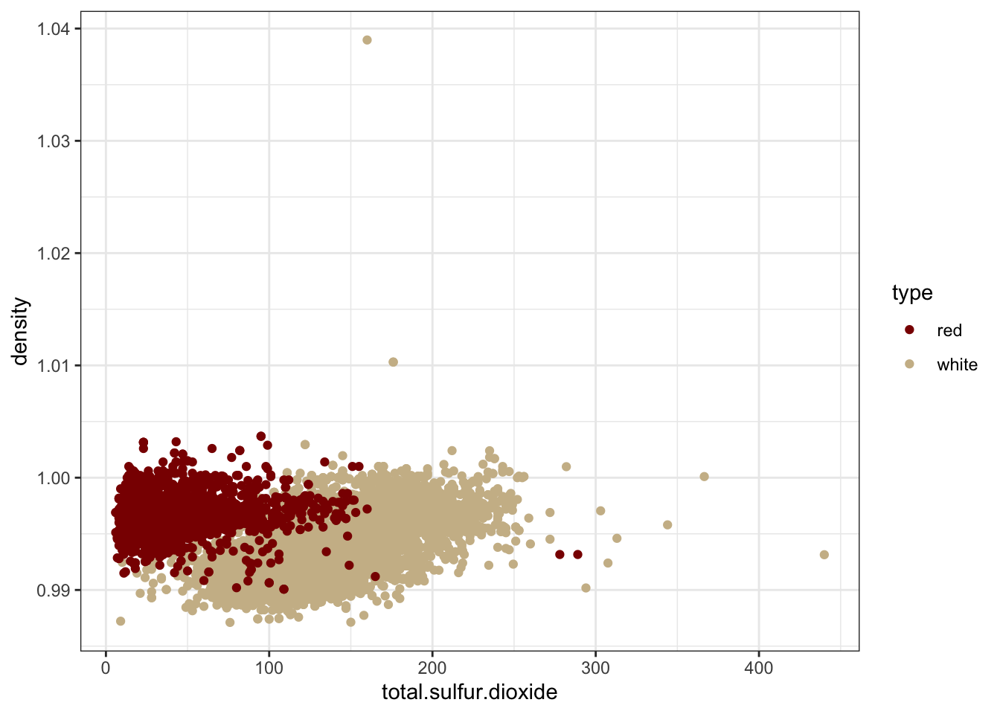

Wine Classification Using Logistic Regression
In this project, I built a classifier to distinguish red and white wines based on their chemical properties. The data set is from Cortez et al. (2009), “Modeling wine preferences by data mining from physicochemical properties”. A formatted version of the data was used for this project.
# Data preparation
data = read.csv("wine_data.csv") # this dataset focuses on two variables: density (wine density in g/cm^3) and total.sulfur.dioxide (amount of sulfur dioxide in the wine, in mg/dm^3)library(ggplot2)
ggplot(data, aes(total.sulfur.dioxide, density, col = type)) +
geom_point() +
scale_color_manual(values = c("darkred", "wheat3")) +
theme_bw() Figure 1.1: Scatter plot of total sulfur dioxide vs. density by type
Based on the plot, total.sulfur.dioxide is the most helpful variable to classify the two wine types because there is less overlap between the two classes in that dimension. Density is less helpful because red and white wines don’t seem to be very different in terms of density.
The output variable is ‘type’ which takes two values: “red” and “white”. I’m transforming this variable from a string to a boolean. red wines = 0, white wines = 1.
data$type <- as.numeric(factor(data$type)) - 1
table(data$type) ##
## 0 1
## 1599 4898Fitting a logistic regression model for ‘type’ using only total.sulfur.dioxide as an input variable.
# For now the whole data set will be used as training data
mod1 = glm(formula = type ~ total.sulfur.dioxide, data = data, family = binomial) # fitting model
pred1 = round(predict(mod1, type = "response")) # predictions
conf1 = table(pred1, data$type) # confusion matrix
train_error1 = 1 - sum(diag(conf1)) / nrow(data) # deriving the training error rate
cat("The training error rate using only total.sulfur.dioxide as an input variable is", train_error1, "\n")## The training error rate using only total.sulfur.dioxide as an input variable is 0.07464984Fitting a logistic regression model for ‘type’ using only density as an input variable.
mod2 = glm(formula = type ~ density,data = data, family = binomial) # fitting model
pred2 = round(predict(mod2, type = "response")) # predictions
conf2 = table(pred2, data$type) # confusion matrix
train_error2 = 1 - sum(diag(conf2)) / nrow(data) # deriving the training error rate
cat("The training error rate using only density as an input variable is", train_error2, "\n")## The training error rate using only density as an input variable is 0.2647376Fitting a logistic regression model for ‘type’ using both total.sulfur.dioxide and density as input variables.
mod3 = glm(formula = type ~ total.sulfur.dioxide + density, data = data, family = binomial) # fitting model
pred3 = round(predict(mod3, type = "response")) # predictions
conf3 = table(pred3, data$type) # confusion matrix
train_error3 = 1 - sum(diag(conf3)) / nrow(data) # deriving the training error rate
cat("The training error rate using both input variables is", train_error3, "\n")## The training error rate using both input variables is 0.03971064‘mod3’ achieved the best training error rate ~4% because it has more information to distinguish between the two wine types.
‘mod1’ achieved a better training error rate ~7.5% because white and red wines have less overlap which implies different distributions of sulfur dioxide content.
‘mod2’ achieved the highest training error rate ~26.5% because it only includes ‘density’ for which there is noticeable overlap between white and red wines (figure 1.1).
Now using both input variables I’ll calculate the probability that a wine with total.sulfur.dioxide = 75, density = 0.997 is a red wine.
newdata = data.frame(total.sulfur.dioxide = 75, density = 0.997) # creating a new data set
prob_white = predict(mod3, newdata = newdata, type = "response")
prob_red = 1 - prob_white
cat("The probability that a wine with a sulfur dioxide content of 75 mg/dm^3 and a density of 0.997 g/cm^3 is a red wine is ~", paste(round(prob_red * 100),"%"), "\n")## The probability that a wine with a sulfur dioxide content of 75 mg/dm^3 and a density of 0.997 g/cm^3 is a red wine is ~ 81 %Now I will estimate the test error rate.
# Dividing the data set into training data and test data
set.seed(2002) # for reproducibility
n = nrow(data)
n.train = round(n * 0.75) # including 75% of observations in the training data set
ind.train = sample(1:n, size = n.train) # retrieving indices of training data
ind.test = (1:n)[-ind.train] # retrieving indices of test data
data.train = data[ind.train,]
data.test = data[ind.test,]
# Fitting 'mod3' to the training data
mod4 = glm(formula = type ~ total.sulfur.dioxide + density, data = data.train, family = binomial)
pred4 = round(predict(mod4, newdata = data.test, type = "response"))
conf4 = table(pred4, data.test$type)
test_error = 1 - sum(diag(conf4)) / nrow(data.test)
cat("The test error rate using both input variables is", test_error, "\n")## The test error rate using both input variables is 0.04310345Now I’ll reiterate this procedure 20 times to get a more concrete answer.
niter = 20 # number of iterations
test_errors = rep(NA, length = niter) # initializing an empty vector for test errors
for(iter in 1:niter) {
data.train = data[ind.train,]
data.test = data[ind.test,]
mod = glm(formula = type ~ total.sulfur.dioxide + density, data = data.train, family = binomial)
pred = round(predict(mod, newdata = data.test, type = "response"))
conf = table(pred, data.test$type)
test_errors[iter] = 1 - sum(diag(conf)) / nrow(data.test)
}
cat("The average of the 20 iterations for the test error rate is", mean(test_errors), "\n")## The average of the 20 iterations for the test error rate is 0.04310345